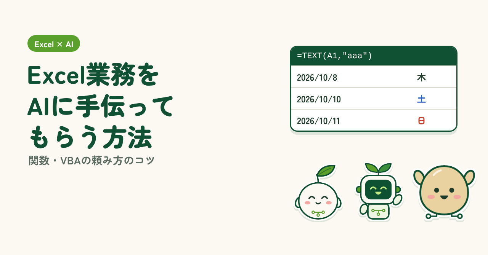
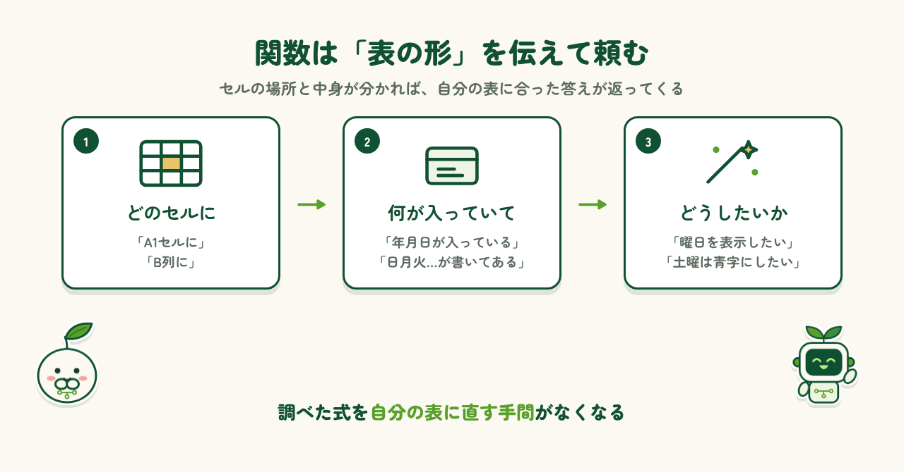
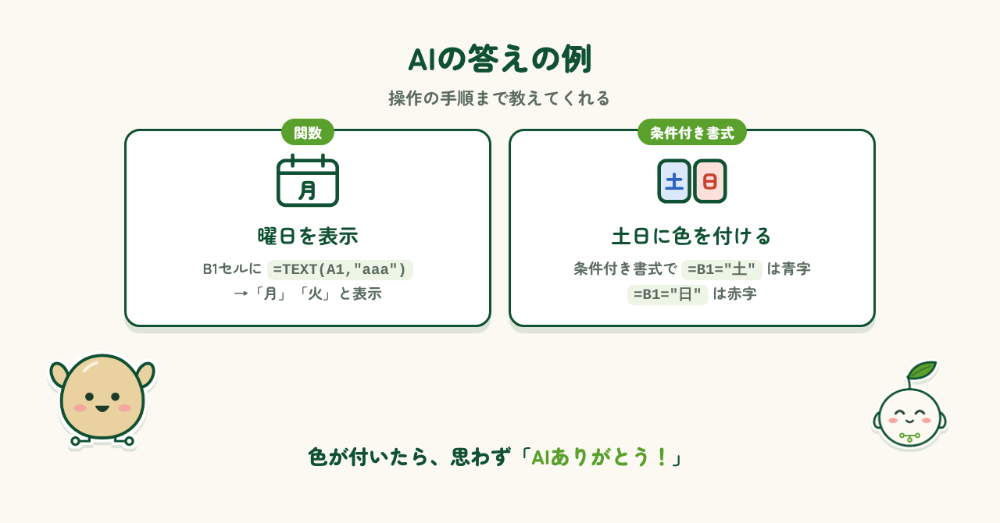
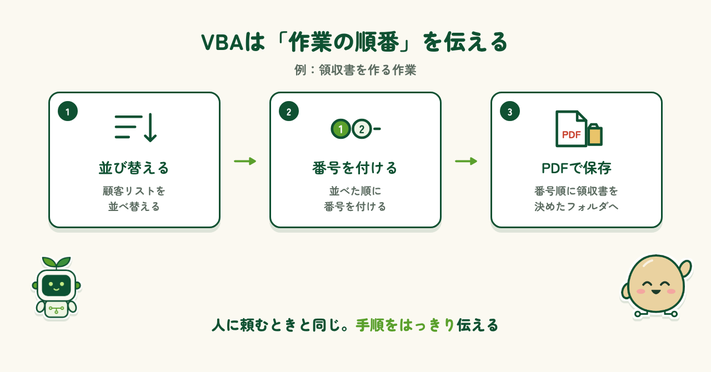
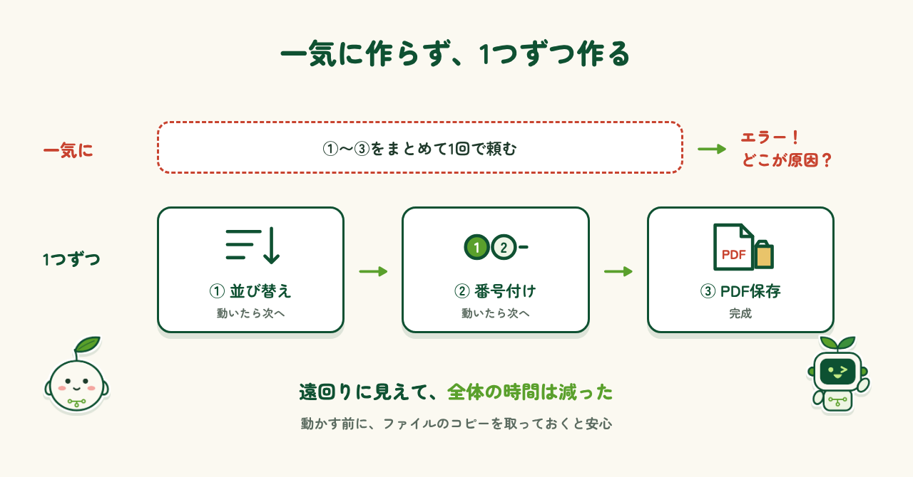
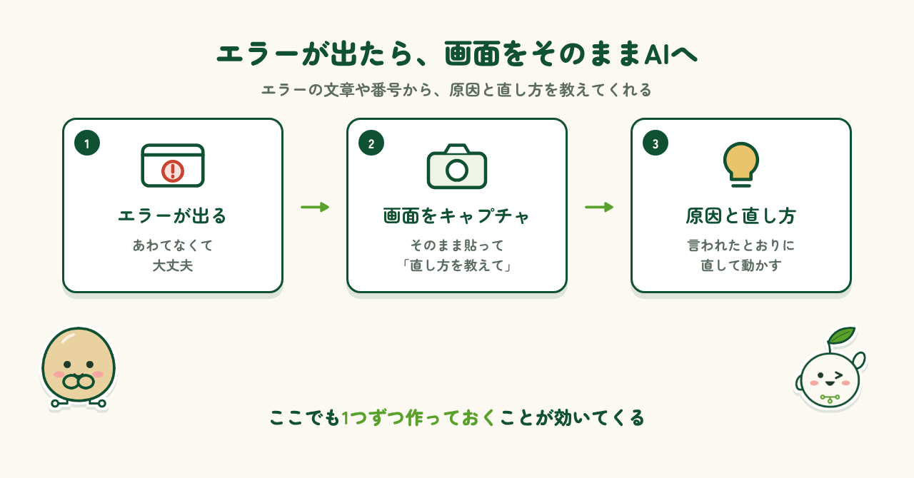

はじめに
Excelで大量のデータを整理・加工する作業は、一つひとつは簡単でも、量が多いと時間がかかります。関数を使おうとしても、ネットで調べた式を自分のデータに合わせて直す必要があります。VBAになるとさらに大変で、どこに問題があるのか分かりにくく、少し直しただけで別のエラーが出ることもあります。そんな「調べて、直して、また調べる」時間を減らしてくれるのがAIです。この記事では、関数とVBAをAIに手伝ってもらうコツを紹介します。
AIに関数を作ってもらう
まずは関数です。条件付き書式のような、Excelの便利な機能の設定方法も同じように聞けます。
頼み方のコツ
頼み方のコツは、「どのセルに」「何が入っていて」「どうしたいか」を具体的に伝えることです。たとえば、次のように頼みます。
- 「A1セルに年月日が入っているときに、B1セルにその曜日を表示できる関数を示して」
- 「B列に日月火水木金土が記入されている。土曜は青字に、日曜は赤字にする条件付き書式を示して」
セルの場所と中身が分かれば、AIは自分の表に合った形で答えてくれます。ネットで調べた式を書き換える手間がなくなります。

AIの答えの例
先ほどの頼み方に、AIは次のように答えてくれます。
- 曜日: B1セルに =TEXT(A1,"aaa") と入れると「月」「火」のように表示。"aaaa" にすると「月曜日」になります
- 条件付き書式: B列を選び、「条件付き書式」→「新しいルール」→「数式を使用して、書式設定するセルを決定」で =B1="土" と入れて青字、同じく =B1="日" で赤字
操作の手順まで教えてくれるので、そのとおりに進めるだけです。実際に色が付いたときは、思わず「AIありがとう！」と言いたくなりました。

AIにVBAを書いてもらう
次はVBAです。関数より作業が長くなる分、頼み方にも工夫が必要です。
頼み方のコツ
VBAを頼むときは、作業の順番に気をつけます。たとえば、領収書を作る作業なら、次のように順番どおりに伝えます。
- 顧客リストを並び替える
- 並べた順に番号を付ける
- 番号順に領収書をPDFにして、指定したフォルダに保存する
順番があいまいだと、AIは別の順番で処理するコードを書いてしまうことがあります。人に仕事を頼むときと同じで、手順をはっきり伝えるほど、思いどおりのコードが返ってきます。

分割して1つずつ作る
もうひとつのコツは、一気に作らず、分割して1つずつ作ることです。先ほどの例なら、まず並び替えだけ、動いたら番号付け、最後にPDF保存、という順に作ります。一気に頼むとエラーが出やすく、どこが原因か分からないので、そのあとの修正にも時間がかかります。分割すると、遠回りに見えて、結果的に全体の作業時間は減りました。なお、VBAで行った操作は元に戻せないので、動かす前にファイルのコピーを取っておくと安心です。

エラーが出たとき
エラーが出たら、エラーの画面をキャプチャして、そのままAIに渡すのが一番です。エラーの文章や番号から、AIが原因と直し方を教えてくれます。ただし、一気に作ったコードの場合は注意が必要です。原因を特定するのに時間がかかり、「動かして確認し、キャプチャを渡す」作業を延々と繰り返すことになりかねません。ここでも、分割して1つずつ作っておくことが効いてきます。

まとめ
AIと一緒にExcel作業をしてみると、自分ひとりでやるよりも圧倒的にラクです。関数は「どのセルに、何が入っていて、どうしたいか」を伝える。VBAは順番を決めて、1つずつ作る。エラーが出たら画面をそのまま渡す。大切なのは、「AIに全部任せる」のではなく、自分がやりたいことをきちんと伝え、AIと一緒に作業を完成させる意識を持つことだと思います。まずは身近な作業から、ぜひ試してみてください。
制作メモ
段落の構成と文章の下書きはAI（Claude）と作り、各段落に自分の感想を入れて、1段落ずつ確認・修正しました。